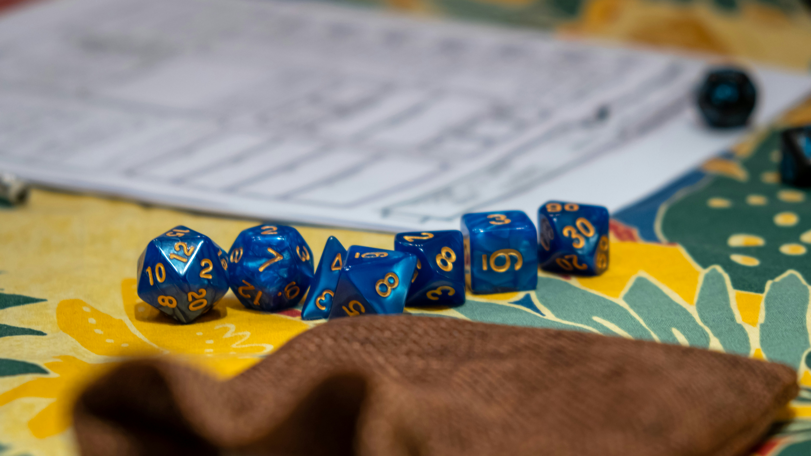
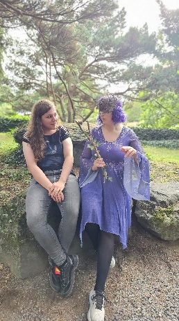
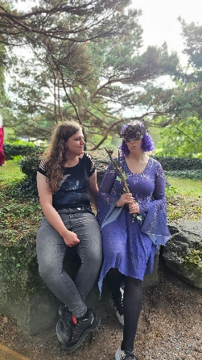
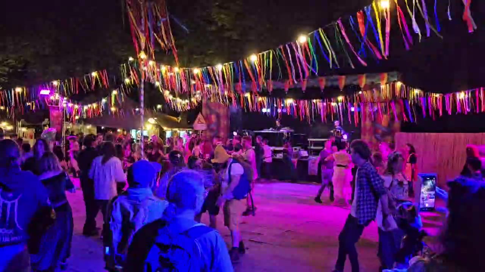

Hobby's en interesses
Welkom bij mijn hobby's en interesses! Ik ben iemand die graag connecties maakt en dingen samendoet met anderen. Veel van mijn hobby’s zijn dingen die je met anderen doet, of die alleen maar leuker worden naarmate er meer mensen meedoen.

Tabletop RPG's en boardgames
Samen een verhaal maken en verkennen, als Gamemaster of als speler.
Fietsen
Lange fietstochten, samen op pad.

Renaissance fairs
Een plek waar iedereen kan zijn wie ze willen.

Kostuums
Je helemaal uitleven met een leuk kostuum.

Samen genieten
bv. Met vrienden genieten van de sfeer op de renaissance fair.

Balfolk en livemuziek
Samen dansen en genieten van de muziek, met regelmatig een nieuwe danspartner.
Samen iets doen
De twee grootste hobby’s die ik heb zijn Tabletop Role Playing Games/boardgames en balfolk. En bij beide zijn de menselijke connecties die gecreëerd worden tijdens deze activiteiten heel belangrijk. Bij TTRPG’s zoals DnD is dit door samen een verhaal te maken en te verkennen, of ik nu de Gamemaster ben of een speler. En bij balfolk komt deze connectie door samen te dansen en te genieten van de muziek. Wat hier ook mee helpt, is dat je bij veel balfolkdansen regelmatig van danspartner verandert, tussen of tijdens het dansen. Ik kook ook heel graag, zeker als het met en/of voor anderen is. Iemand zien genieten van een van mijn gerechten brengt me altijd veel blijdschap.
Samen iets beleven
Samen een ervaring opdoen is ook iets wat ik altijd leuk vind. Daarom ga ik graag op lange fietstochten, en een goede stevige wandeling is ook altijd fijn.
Recent ben ik in de wereld van renaissance fairs gevallen met wat vrienden en ik heb er al heel veel plezier mee gehad. Er is iets magisch (pun intended) aan ergens zijn waar iedereen kan zijn wie ze willen en zich ook kan uitleven door een leuk kostuum te maken. Er zijn bijna altijd een hele hoop leuke workshops over verschillende hobby’s en creatieve activiteiten die je kunt gaan doen, dus je zult altijd wel iets vinden dat bij je past.
En dan het ding dat mij het meest verliefd heeft laten worden op renaissance fairs zijn de meerdere podiums met veel verschillende livemuziekbands en -stijlen. Je kunt gaan van dansen op elektronische muziek tussen de elven, dwergen en nog een hoop andere magische wezens naar balfolk dansen met een fee terwijl er een liveband muziek speelt.
En dat is niet eens het enige wat er gebeurt op deze podiums! Al ooit naar een WWE-match geweest tussen een hoop fantasiepersonages en wezens? Wel, ik kan nu zeggen dat ik het ooit gedaan heb. En als ik eerlijk moet zijn: ik hield van elke seconde. Dit alles heeft ervoor gezorgd dat ik in korte tijd een echte fanaat van renaissance fairs ben geworden, zoals je waarschijnlijk wel kunt merken, hihi.
Waar vind je mij?
Ik ga vaak naar de WASD in Turnhout. Dat is zo’n beetje mijn stamcafé geworden. Zoals je aan de naam kunt merken, is het ook niet zomaar een café, maar een boardgamecafé! Dit is de plek waar ik meestal mijn TTRPG’s ga spelen, maar vaak ben ik er ook gewoon om eender welk spel te spelen met wie wil. Ik ben ook vaak op verschillende balfolkevenementen aan het dansen en natuurlijk ga ik ook heel vaak naar eender welke renaissance fair die mij interessant lijkt.
Mijn hobby's op een rij
| Hobby | Wat ik er leuk aan vind |
|---|---|
| TTRPG's en boardgames | Samen een verhaal maken en verkennen, als Gamemaster of als speler |
| Balfolk | Samen dansen, genieten van de muziek en regelmatig van danspartner wisselen |
| Koken | Koken met en/of voor anderen en hen zien genieten van mijn gerechten |
| Fietsen, wandelen en hiken | Samen lange fietstochten en stevige wandelingen maken |
| Renaissance fairs | Een kostuum maken, workshops volgen en genieten van livemuziek op de podiums |